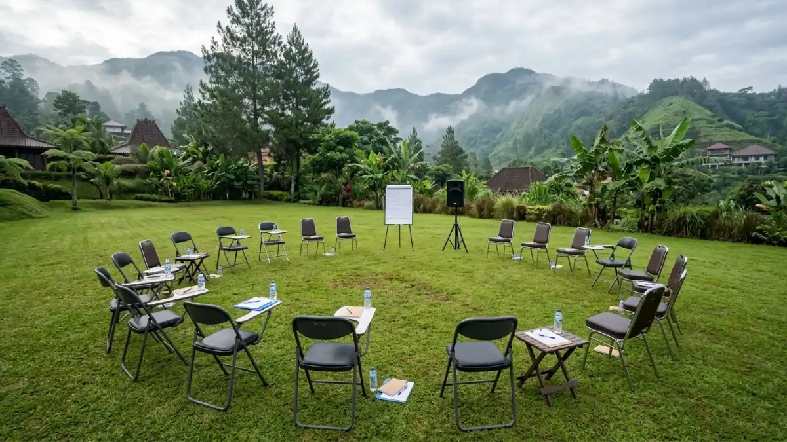

Konsep meeting alam terbuka di Batu memadukan agenda kerja dan aktivitas kebersamaan tim di ruang berhawa sejuk. (Ilustrasi)
Konsep meeting alam terbuka di Batu memadukan agenda kerja dan aktivitas kebersamaan tim di ruang berhawa sejuk. (Ilustrasi)
Konsep meeting alam terbuka Batu adalah format rapat di ruang terbuka berhawa sejuk Kota Batu yang memadukan agenda kerja, diskusi santai, dan aktivitas kebersamaan tim.
- Meeting alam terbuka di Batu memindahkan rapat ke area terbuka seperti kebun, taman, atau glamping tanpa mengorbankan target pembahasan.
- Kota Batu berada di dataran tinggi dengan ketinggian rata-rata sekitar 921 meter di atas permukaan laut menurut BPS Kota Batu Dalam Angka 2025.
- Dinas Pariwisata Kota Batu mencatat 362.869 kunjungan wisatawan sementara hingga 12 Juli 2026, sehingga pemesanan lokasi perlu dilakukan jauh hari.
- Keberhasilan konsep ini bergantung pada lokasi, cuaca, kesiapan teknis, agenda yang jelas, dan keselamatan peserta.
- Rapat dengan dokumen rahasia atau presentasi teknis yang rumit tetap lebih cocok di ruangan tertutup.
DAFTAR ISI
- 1. Apa itu konsep meeting alam terbuka Batu?
- 2. Mengapa Kota Batu cocok untuk meeting alam terbuka?
- 3. Apa saja manfaat meeting di alam terbuka?
- 4. Bagaimana cara kerja konsep meeting alam terbuka di Batu?
- 5. Faktor apa yang menentukan keberhasilan meeting alam terbuka?
- 6. Apa perbedaan meeting alam terbuka dan meeting di ruangan?
- 7. Apa kesalahan umum dalam menyelenggarakan meeting alam terbuka?
- 8. Bagaimana tips agar meeting alam terbuka di Batu berjalan efektif?
- 9. Kesimpulan
1. Apa itu konsep meeting alam terbuka Batu?
Meeting alam terbuka di Batu adalah rapat atau pertemuan kerja yang digelar di area terbuka seperti kebun, taman, atau glamping di Kota Batu.
Konsep meeting alam terbuka Batu bukan sekadar memindahkan meja rapat ke luar ruangan. Konsep ini menata ulang seluruh pengalaman rapat, mulai dari lokasi, tata letak, durasi, suasana, hingga cara peserta berinteraksi, sehingga udara sejuk dan pemandangan pegunungan menjadi bagian dari proses berpikir tim.
Format ini umumnya dipakai oleh perusahaan, instansi, sekolah, komunitas, dan startup yang ingin menggelar rapat strategi, evaluasi tahunan, perencanaan program, workshop, atau koordinasi lintas divisi dalam suasana yang lebih rileks.
Bentuknya bervariasi, mulai dari rapat pagi di taman, diskusi kelompok di bawah tenda, sampai pertemuan dua hari satu malam di area glamping.
Elemen inti konsep ini ada empat. Pertama, ruang terbuka yang aman dan nyaman. Kedua, agenda kerja yang terstruktur dengan target keputusan yang jelas. Ketiga, kegiatan-kegiatan penunjang seperti sesi bersantai, permainan berkelompok, atau aktivitas luar ruangan yang ringan. Keempat, dukungan logistik berupa listrik, konektivitas, konsumsi, dan rencana cadangan saat hujan.
Konsep ini juga memiliki batasan. Rapat yang membahas dokumen rahasia, presentasi dengan banyak grafik rinci, atau diskusi teknis yang membutuhkan layar besar tetap lebih cocok di ruangan tertutup.
Meeting alam terbuka paling efektif untuk pembahasan strategis, kreatif, dan penguatan hubungan antaranggota tim.
2. Mengapa Kota Batu cocok untuk meeting alam terbuka?
Kota Batu cocok untuk meeting alam terbuka karena berada di dataran tinggi berhawa sejuk, dekat Malang, dan memiliki banyak akomodasi serta daya tarik wisata.
Menurut BPS Kota Batu Dalam Angka 2025, ketinggian rata-rata Kota Batu sekitar 921 meter di atas permukaan laut dan wilayahnya berupa perbukitan.
Kota ini juga diapit tiga gunung terkenal, yaitu Panderman, Arjuno, dan Welirang. Kombinasi ketinggian dan topografi ini membuat udara cenderung lebih sejuk dibanding dataran rendah, kondisi yang membantu peserta bertahan duduk berdiskusi di luar ruangan pada siang hari.
Dari sisi kesiapan wisata, Dinas Pariwisata Kota Batu mencatat 362.869 kunjungan wisatawan secara sementara hingga 12 Juli 2026 pada musim libur sekolah, dengan okupansi hotel yang melonjak hingga 90 persen.
Pada libur panjang 13 hingga 31 Mei 2026, tercatat 296.993 kunjungan, termasuk 37.778 wisatawan yang menginap.
Angka ini menunjukkan bahwa pelaku usaha di Batu sudah terbiasa melayani kelompok besar, tetapi juga berarti musim libur sekolah dan libur panjang adalah periode padat dengan ketersediaan lokasi yang ketat.
Pemantauan Dinas Pariwisata pada 22 Juni hingga 6 Juli 2026 mencakup 90 akomodasi hotel dan 49 daya tarik wisata, yang menggambarkan luasnya pilihan fasilitas di kota ini.
Dari sisi akses, Kota Batu berjarak sekitar 15 kilometer dari Kota Malang, sehingga peserta dari Malang Raya dapat tiba dengan cepat.
Untuk membandingkan jenis venue yang tersedia, baca panduan memilih lokasi meeting alam terbuka di Batu.
3. Apa saja manfaat meeting di alam terbuka?
Manfaat utama meeting alam terbuka adalah suasana yang lebih rileks, diskusi yang lebih terbuka, hubungan tim yang lebih akrab, dan ide yang lebih segar.
Manfaat ini umumnya dirasakan ketika rapat dirancang dengan baik, bukan otomatis hadir hanya karena lokasinya di luar ruangan. Berikut manfaat yang paling sering dikaitkan dengan format ini:
- Suasana lebih rileks. Udara segar dan ruang yang luas dapat mengurangi kesan formal sehingga peserta lebih nyaman menyampaikan pendapat.
- Diskusi lebih terbuka. Tata letak melingkar atau lesehan menghilangkan sekat hierarki yang sering muncul pada meja rapat panjang.
- Hubungan tim lebih kuat. Waktu bersama di sela rapat, seperti makan siang bersama atau jalan santai, membuka ruang obrolan yang jarang terjadi di kantor.
- Ide lebih segar. Pergantian lingkungan dapat membantu peserta berpikir di luar kebiasaan, terutama untuk sesi brainstorming dan perencanaan strategi.
- Pengalaman yang berkesan. Peserta cenderung mengingat keputusan yang dihasilkan di acara yang pengalamannya menyenangkan, sehingga komitmen terhadap tindak lanjut dapat meningkat.
Manfaat tersebut bersifat umum dan dapat bervariasi tergantung jenis rapat, budaya organisasi, serta kualitas fasilitasi. Tanpa agenda yang tegas, rapat di alam terbuka justru dapat berubah menjadi acara rekreasi tanpa hasil.

Tata letak meeting outdoor alam terbuka di Batu yang melingkar atau santai dapat menghilangkan sekat hierarki rapat formal. (Ilustrasi)4. Bagaimana cara kerja konsep meeting alam terbuka di Batu?
Konsep ini bekerja dengan menggabungkan agenda rapat terstruktur, tata ruang terbuka, aktivitas pendukung, dan logistik cadangan dalam satu rangkaian acara yang terencana.
Dalam praktiknya, penyelenggara biasanya mengikuti lima langkah berikut:
- Menetapkan tujuan. Tentukan keputusan atau keluaran yang ingin dicapai, misalnya rencana kerja kuartal berikutnya atau evaluasi proyek.
- Memilih lokasi dan tanggal. Sesuaikan jenis venue dengan jumlah peserta, anggaran, dan musim, lalu pesan lebih awal.
- Menyusun rundown. Letakkan sesi berat di pagi hari, sisipkan jeda, lalu tempatkan aktivitas ringan setelah makan siang.
- Menyiapkan teknis dan cadangan. Pastikan listrik, perangkat suara, tenda, serta ruang tertutup cadangan tersedia.
- Mengevaluasi dan menindaklanjuti. Tutup acara dengan ringkasan keputusan, penanggung jawab, dan tenggat tindak lanjut.
Susunan jadwal yang lebih rinci, termasuk contoh satu hari dan dua hari satu malam, dibahas dalam contoh rundown meeting alam terbuka di Batu.
5. Faktor apa yang menentukan keberhasilan meeting alam terbuka?
Keberhasilan meeting alam terbuka ditentukan oleh pemilihan lokasi, cuaca dan waktu, kesiapan teknis, tujuan rapat yang jelas, serta keselamatan dan kenyamanan peserta.
Lokasi. Venue yang baik memiliki area teduh, akses kendaraan yang layak, toilet memadai, dan ruang cadangan tertutup. Lokasi yang indah tetapi minim fasilitas dasar sering menimbulkan gangguan yang menurunkan fokus rapat.
Cuaca dan waktu. Wilayah ini mengenal dua musim, yaitu kemarau dan penghujan. Pada musim hujan, sesi inti sebaiknya dijadwalkan pagi hari dan ruang tertutup disiapkan. Pada musim kemarau, perlindungan dari terik siang tetap diperlukan walaupun udara sejuk.
Kesiapan teknis. Rapat di luar ruangan sangat bergantung pada listrik, suara yang jelas, dan koneksi internet. Peserta yang tidak mendengar pembicara akan cepat kehilangan perhatian.
Tujuan dan fasilitasi. Rapat tetap membutuhkan moderator, notulen, dan batas waktu per topik. Suasana santai tidak boleh menggantikan disiplin pembahasan.
Keselamatan dan kenyamanan. Pakaian hangat, air minum, kotak P3K, dan pertimbangan kondisi kesehatan peserta perlu dipikirkan sejak awal. Daftar periksa lengkapnya tersedia di checklist persiapan meeting alam terbuka di Batu.
6. Apa perbedaan meeting alam terbuka dan meeting di ruangan?
Meeting alam terbuka lebih santai dan interaktif tetapi bergantung pada cuaca, sedangkan meeting ruangan lebih terkontrol, tenang, dan cocok untuk presentasi teknis.
| Aspek | Meeting Alam Terbuka | Meeting Ruangan |
|---|---|---|
| Suasana | Rileks dan akrab | Formal dan terkontrol |
| Fokus | Rentan terpecah oleh lingkungan | Lebih mudah dijaga |
| Teknologi | Perlu listrik dan perangkat tambahan | Umumnya sudah tersedia |
| Risiko | Cuaca dan keselamatan | Relatif rendah |
| Cocok untuk | Strategi, brainstorming, evaluasi, penguatan tim | Presentasi data, rapat rahasia, pelatihan teknis |
Keduanya tidak saling menggantikan. Banyak penyelenggara menggabungkan keduanya, misalnya sesi teknis di ruang tertutup pada pagi hari lalu sesi kreatif di area terbuka pada siang hari.
7. Apa kesalahan umum dalam menyelenggarakan meeting alam terbuka?
Kesalahan umum meliputi tidak menyiapkan rencana hujan, agenda terlalu longgar, memilih lokasi tanpa cek sinyal dan listrik, serta mengabaikan keselamatan peserta.
- Tidak ada rencana cadangan. Hujan yang datang tiba-tiba memaksa rapat berhenti jika ruang tertutup tidak disiapkan.
- Agenda terlalu longgar. Tanpa target dan batas waktu, diskusi melebar dan keputusan tidak tercapai.
- Mengabaikan sinyal dan listrik. Sebagian area wisata di dataran tinggi memiliki sinyal yang berbeda-beda, sehingga uji langsung perlu dilakukan sebelum memesan.
- Meremehkan suhu. Peserta yang tidak membawa pakaian hangat dapat tidak nyaman saat pagi dan sore hari.
- Memesan terlalu mepet. Pada musim libur, lokasi favorit cepat penuh dan harga cenderung lebih tinggi.
- Memasukkan terlalu banyak aktivitas. Kegiatan rekreasi yang berlebihan menggeser tujuan utama rapat.
8. Bagaimana tips agar meeting alam terbuka di Batu berjalan efektif?
Agar efektif, tetapkan tujuan rapat tertulis, pilih jam produktif pagi hari, batasi sesi diskusi, siapkan cadangan indoor, dan sediakan perlengkapan bagi udara dingin.
Mulailah dengan survei lokasi atau minimal video call dengan pengelola untuk memeriksa area, toilet, dan titik sinyal. Bagikan agenda kepada peserta sebelum hari acara supaya mereka datang dengan persiapan.
Gunakan sesi kerja berdurasi 45 hingga 60 menit diikuti jeda singkat. Pola ini membantu menjaga fokus ketika ada banyak hal yang mengalihkan perhatian di sekitar.
Tunjuk satu penanggung jawab lapangan yang mengurus logistik agar fasilitator dapat memusatkan perhatian pada isi rapat.
Pilih hari kerja bila fleksibel, karena akhir pekan dan musim libur adalah waktu ramai. Data kunjungan awal 2026 menunjukkan jumlah wisatawan pada Januari mencapai 630.438 orang, dengan rata-rata bulanan Januari hingga Maret sekitar 432 ribu.
Rentang tersebut memberi gambaran bahwa Batu ramai sepanjang tahun, sehingga pemesanan dini selalu disarankan.
Terakhir, dokumentasikan keputusan secara tertulis sebelum peserta pulang. Peserta yang meninggalkan acara dengan catatan keputusan dan tenggat akan lebih mudah menindaklanjuti hasil rapat.
9. Kesimpulan
Konsep meeting alam terbuka Batu efektif bila dirancang sebagai rapat yang sungguh-sungguh, bukan sekadar liburan.
Tetapkan tujuan yang jelas, pilih lokasi dengan fasilitas dasar yang memadai, jadwalkan sesi penting di pagi hari, dan selalu siapkan rencana cadangan untuk hujan.
Dengan data kunjungan wisatawan Batu yang tinggi sepanjang 2026, pesan lokasi sejak awal dan pastikan keselamatan peserta menjadi prioritas.